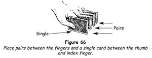

To palm a card, in conjuror's language, means to take a card in the hand - generally the right hand - and hold it concealed there without its presence being suspected by the onlookers. The principle is a very important one in card magic, because many of the finest feats possible depend upon it. The best methods of palming cards are not difficult to learn. The reason that palming is often neglected or badly done is because of lack of confidence. The first thing beginners are likely to say is that their hands are too small; they cannot conceive that they should hold so large an object as a playing card in one hand secretly. To show what a mistaken notion this is, test it in this way.
Take a card and lay it on your hand with the fingers extended in such a way that its outer left corner is at the outer phalanx of the little finger and its inner right corner against the ball of the thumb. Flex the fingers slightly and turn your hand over. You will find that the card is held (that is, palmed) securely, and so long as the fingers are pressed together it is completely hidden. Since a hand always has a half-closed appearance when in repose, the position of the hand will appear to be a perfectly natural one.
At first you will be so conscious of the presence of the card in your hand that you will want to drop it to your side or even put it behind your back. To overcome this self-consciousness the best thing to do is to become so accustomed to having a card in your hand that you no longer take any notice of it. When you are reading a book or listening to the radio, place a card in your hand in the proper position, bend the fingers slightly, and then try to forget all about it. In a very short time you will become so used to it that you will be able to move your hand freely and naturally, always remembering, of course, that the back of your hand must always be facing outwards. Do not be afraid to bend the card; you cannot palm it naturally unless you do.
Practically everyone, when beginning to practise the palming of cards, will be careful to keep the fingers curved naturally but will overlook the importance of having the thumb lie in its natural position along the side of the hand. When the thumb extends at a right angle from the hand, a reflex action that must be overcome, its unnatural appearance at once attracts attention to the hand and arouses suspicion.
Top Palm 1 - Single Card
1. Hold the deck in your left hand by the sides between the middle, third and little fingers, the tips of which are flush with the top of the deck, pressing the left side of the deck against the ball of the thumb. Bend the thumb at the outermost phalanx on the top card, with the tip resting a little below its middle, and place the tip of the index finger against the outer right corner (figure 51).
2. Bring the right hand over the pack as if merely to square it, the hand being well arched. Place the fingers, held close together, against the outer end, with the third (outermost) phalanxes pressing against the outer end. Rest the tip of the thumb against the left inner corner (figure 52).
3. Straighten the left thumb pressing it on the top card and so push the card into the position shown in figure 53.
4. The outer right corner of the top card is thus brought against the tip of the little finger. Press lightly downwards with the right little finger and lever the card upwards, at the same time bending the left thumb inward to its original position, and the card will be tilted upwards against the palm and the fingers (figure 54).
5. Draw the right fingers and thumb along the ends of the deck, squaring the cards. Grip the outer corners between the thumb at the inner end and the index and middle fingers at the outer end, at the same time flexing the ring and little fingers (figure 55).
6. When the palm is complete, the thumb lies along the forefinger. Your hand will appear naturally bent and relaxed (figure 56).
The two essential points in the correct palming of cards are:
a) The right hand must remain arched throughout.
b) The right hand must retain the deck after the card is palmed, while the left hand moves away to make some appropriate gesture or natural personal action. For example, you may gesture to illustrate what you want done, which may be for a person to stand closer to you. Or you may brush the table clean of an imaginary speck, touch the corner of your mouth with the knuckle of your index finger, touch your chin as if in momentary thought - in other words, make some personal action that is natural and characteristic of you. Because of this, the transfer of the pack from your left to your right hand will seem to have no connection with the trick you are performing.
Do not make the mistake of trying to palm a card with the utmost rapidity, for all rapid actions of the hand arouse suspicion. The quickness of the hand does not deceive the eye. The palm must be made in exactly the same time as merely squaring the cards, neither more nor less.
7. A moment later, take the pack from the right hand with the left and dispose of the palmed card as required by the trick.
Top Palm 2 - Several Cards
1. Hold the deck face downwards in your left hand between the top phalanx of the thumb on one side and the third phalanxes of the middle and ring fingers on the other, the index finger bent under the pack and the little finger free. Not only is this a very open and graceful method of holding the deck, but it is also essential to the proper execution of the sleight.
2. With your right hand square the deck, and under cover of this action, lift the inner ends of the cards to be palmed and insert the tip of the little finger into the break thus made (figure 57).
3. Remove the right hand, making some appropriate gesture, then with it grasp the whole pack, with the fingers close together at the outer end and the thumb at the inner one, which maintains the break. Move the left thumb and fingers inwards along the sides of the deck, squaring it. Press the tips of the thumb and fingers into the break, and in the outward squaring motion push the separated packet of cards up into the right hand (figure 58).
4. Slide the right thumb and fingers along the ends of the pack, squaring them. Grip the pack between the thumb and the index and middle fingers, and flex the ring and little fingers a little, thus palming the cards securely. Remove the left hand, holding the right hand stationary for a few moments. Use the left hand as you would when palming a single card, and a few moments later take the pack with the left hand again and dispose of the palmed cards as may be required.
Palm Glimpse
When a card has been palmed in the right hand, the mere act of handing the deck to a spectator affords a perfect glimpse of the card. Many performers prefer the palm glimpse to any other method of glimpsing a card. With the card palmed, a mere wave of the hand bringing the card within the line of vision is all that is necessary (figure 59). The pack can then be placed in the left hand and the palmed card returned to the top in squaring the pack.
Note that when, having a card palmed in your right hand, you want to hand the pack out for shuffling, it should be held by the lower left corner, thumb on the back and bent forefinger on the face, the other fingers curled inwards. Hand the pack to someone on your extreme left.
Replacing Palmed Cards
The replacement of palmed cards upon the pack is much more difficult than is their secret abstraction. Let us say that you have palmed a card and handed the pack for shuffling. The shuffle completed, you ask for the return of the cards. If you take them with your right hand your awkwardness will betray the fact that you have a card palmed, and you will probably turn your hand so far that it will be seen. If you take the cards with your left hand, you must then have a good reason for placing your right hand over the pack. Moreover, since placing your right hand flat on the pack will tell your audience that you are replacing cards, how will you transfer them from the arched right palm to the flat pack?
First method
1. Extend your left hand, palm upwards, pointing to it with the forefinger of your right hand, and have the spectator place the pack on it. Hold the cards loosely (figure 60).
2. Request the spectator to cut the cards. When he lifts the upper portion, bring the right hand over the remaining packet, the fingers slightly in front of it (figure 61), and grasp it with a little backwards motion of the hand between the thumb and fingers. At the same time bend the index finger, pressing its nail downwards on the palmed card, flattening it and adding it to the packet (figure 62).
3. Immediately take the cards away with the right hand and extend the left to take the spectator's cards. Drop those you hold in your right hand on top of those now in your left, saying, 'You shuffled and cut the cards. Thank you.'
This procedure is entirely natural, for, in assisting in making the cut, the right hand would move to the left to pick up the cards remaining in the left hand even if there were no sleight involved.
Second method
There are occasions when you will want to replace palmed cards and when it is not desirable to have the pack cut - as, for example, when performing the Card in the Pocket, the next trick to be described. In such cases you use the procedure given in the first method, but the left hand with the pack is held at the centre of the body so that the two hands come together naturally. The left hand places the pack in the right hand, which adds the palmed cards as already described.
To understand the importance of placing the pack in the right hand, rather than reaching for it and taking it with the right, stand on someone's left and hand him an object. Next offer him another object. He will move his left hand to his right, which will move very little, then place the first object in the right hand, and move his left hand back to take the second object. In making the replacement, you simulate this natural action.
The best way to gain complete confidence in your ability to palm cards successfully is to do tricks in which the palm is used. In the feats that follow, the sleight is executed under such favourable circumstances - the attention of the spectators being directed elsewhere - that the student need have no fear of being detected if he times his movements properly.
TRICKS WITH THE PALM
Card in the Pocket
In this feat the magician discovers a card that has been merely thought of, without apparently having been given any clues. It is a good idea to introduce the trick as one that is done by mind reading.
1. It is necessary to have a spectator think of a small number, but rather than limiting him to numbers between, say, one and ten or twelve, ask him to think of his favourite hour. 'For example,' you say, 'you may be an early riser and your favourite hour would then be six o'clock - although that certainly is not mine. Or you may favour your lunch hour, or the hour when you watch your favourite television programme. Any hour you please, but fix your mind on it and do not change it.
'I am going to hand you the pack and I want you to ascertain what card lies at your favourite hour from the top. For instance, four o'clock may be your choice - afternoon tea, you know. In that case you will lift the cards one by one, counting one, two, three, four. Look at and remember the fourth card, and put the cards back on top of the pack.' Hand the pack to him. 'Will you do the same thing, so that the matter will be quite clear to you?' See that the spectator cuts and puts the cards back correctly.
2. Continue with the patter, thus. 'That's fine. Now shuffle the pack thoroughly and cut it. Satisfied? Then I will turn my back while you count down to the number of your favourite hour, note the card at that number and show it to all, finally replacing the cards on the top of the pack.' Turn away. When the spectator announces he is ready, turn around and take the deck.
3. 'Now, you have thought of your favourite hour and you have noted the card at that number from the top of this deck which you shuffled and cut yourself. It is impossible for me to know where any particular card may be in the deck, but to make the test still more convincing I will place the cards behind my back.' Do so.
'Now, I want you to think intently of your favourite hour and the card you noted. Imagine you see a big picture of the number and the card on the wall. That's good. I believe I have it.' Bring forwards the bottom card of the deck, holding it facing you and not allowing anyone to get a glimpse of its face. Look at the card - it makes no difference what card it is - then at the spectators, and say, 'Yes, I believe it's the one you are thinking of. Don't name it. I'll put this card in my pocket.' Place it in your right trouser-pocket and in doing so palm it as you thrust your hand to the bottom of the pocket.
4. You have the deck in your left hand. Bring your right hand from your pocket and place the pack in it, replacing the palmed card on the top by the second replacement method. Move the left hand away and gesture with it, saying, 'If I have been successful I have your card here in my pocket.' Pat the pocket with your left hand.
5. 'Let me show you that your card is gone. What number was it? Don't name the card, just the hour. Six! Yes, I got the impression that you are an early riser.' Have some appropriate remark for each hour. 'Watch!' Deal five cards deliberately on the table face downwards, saying, 'Will you look at the card?' As he turns the card face upwards, and everyone's attention is centred on it, push the top card, which will be the spectator's card, well over the side of the deck. Bring the right hand back in the natural reaction after the throw, palm the card flying so to speak, and immediately thrust the hand into your trouser-pocket, saying, 'Of course it isn't your card. I placed it here in my pocket.'
6. Push your hand well down into the pocket, release the card, then bringing the hand upwards take the card by the extreme upper end and bring it up into view about three-quarters of its length out of the pocket. Its back will be towards the spectators. Hold it there and say to the spectator, 'Please name your card.' He does so and you turn over the card slowly showing it to be that very card.
Do not move the right hand backwards swiftly to take the top card when making the palm. All eyes will be drawn to the card you have thrown on the table. Move it back at a natural pace, take the card by covering it with the full width of the hand, and continue the movement backwards to your pocket. By the time the spectators are looking towards your hand again it should actually be in the pocket.
This is one of the great card feats that has stood the test of time, and we urge the student to master it. Not only will it give you confidence in palming cards but you will also gain valuable insight into the importance of timing in the execution of sleights.
The palm described here in step 5 is a special palm especially suitable for this particular trick and should not be confused with the top palm.
Now You See It!
Have a spectator select a card, note it, return it to the pack and shuffle the pack himself. Announce that you will find the card if you are allowed four attempts. Accordingly you remove four cards from the deck without showing their faces. When, however, you do show the cards, not one of them is the chosen card. You replace them on the table, request the spectator to point to one of them, and - lo and behold - it is his card!
1. First of all, before you offer to show the trick, secretly note and remember the bottom card of the deck. Bring this card to the top with an overhand shuffle. Let us assume that this card is the four of spades.
2. Holding the deck in your left hand, place both hands behind your back, saying, 'I propose to attempt a surprising little feat under these conditions, with the cards held behind my back to prove that the result is inherent in the cards. I have nothing to do with it, it just happens, as you will see.' While saying this and still facing the audience, with your left thumb push the top card (the four of spades) into your right hand, its back against the palm and the slightly bent fingers. Turn this hand palm upwards and with it clasp the back of the left hand. In this position the card held in the right hand is concealed in a natural manner.
3. Turn your back to the audience and ask a spectator to take the pack and shuffle it. When he has done so, request him to replace it in your hand face downwards. Failure to make this last stipulation would lead to an embarrassing result.
Continue, 'You have shuffled the cards, and clearly I cannot now the position of any card. Now will you cut the pack at any point you wish?' When the spectator has removed the upper portion of the pack, turn around facing him and ask him, 'Will you assure everyone that you cut the cards at a point of your own choice?' Seize this opportunity to place the card secretly held in your right hand on top of the remainder of the pack in your left hand and again grasp the back of the left hand exactly as before (figure 63). Be careful not to move your elbows during this action.
4. Once more turn your back to the audience and with your left thumb push forwards the top card of your packet. This is, of course, the four of spades that you have just secretly added, but the onlookers will be convinced that it is a card the name of which you cannot possibly know. Continue, 'Please take the card at which you cut and show it to everyone.'
Pause for a moment or two, then say, 'Now replace the card on this packet and then place your packet on top of all. Finally, take the pack and shuffle it thoroughly so that none of us can have the slightest notion where your card may be in the deck.'
5. When this has been done, face your audience, take the deck and say, 'My feat is this. I shall remove four cards and one of them will be your card - I hope!' Run through the cards, remove three as unlike the spectator's card as possible and put them on the table face downwards. Using our example of the four of spades as the chosen card, you would remove the seven of diamonds, the seven of hearts and the eight of diamonds. Thus the spectator will know at a single glance at each of them that you have not found his card. Finally, remove the chosen card and place it on the other three.
6. Pick up the four cards and hold the packet face downwards in your left hand in position for the glide. Tip up the packet and show the face card - a red card - and ask, 'Is this your card?'
'No.'
Turn the packet face downwards, draw out the bottom card, which you have just shown, and put it on the table face downwards, tipping it up a little so that the spectators can get a glimpse of its face. Do this casually, not ostentatiously.
7. Draw out the card now at the bottom of the packet and put it on the top. Tip the packet upwards and show the card now at its face. 'Is this your card?' you ask. When this is denied, turn the packet face downwards and perform the glide, thus drawing out the chosen card above it - in this case the four of spades. Place it face downwards on the table beside the first card. Be careful not to show its face.
8. Two cards remain in your left hand. Remove the lower one and place it on top of the other card. Tip up the packet and show the face card. 'Then this is your card?' you ask. Upon receiving a negative response, drop your hand, remove this card and place it beside the other two.
9. You now hold one card face downwards in your left hand and this card you have already shown. Turn it face upwards and ask, 'Is this your card?' Immediately place it face downwards beside the other three, even before the spectator has a chance to reply. It was for this purpose that you chose three cards altogether unlike the chosen card in both suit and value. Using this precaution you will find that the audience will never notice you have shown the same card twice. In this case we have supposed that the chosen card was a black card, and you have shown three red cards only, so that the merest glance at each card satisfies the onlookers that you have failed. They have no real interest in the cards you show and therefore do not study them closely.
10. You have placed the four cards on the table in a row, which extends away from the spectator, with the selected card second from the end nearest him (figure 64). Ask him to touch one of the four cards. He will in nineteen cases out of twenty, point to the second card, the chosen card!
Pick up the other three cards, show them casually and drop them on the deck.
'What was the name of your card?' you ask.
'The four of spades!'
Wave your hand over the one card remaining on the table. Then slowly turn it face upwards. It is the chosen card.
You will ask, 'But what shall I do if the spectator points to one of the other cards?' In that case you would resort to a stratagem known as the equivoque. If he points to one of the other cards, you continue, 'And one of the other cards, too, if you please.' If he touches the chosen card now, you remove the other two cards and place them on the deck. But if he points to another of the indifferent cards you remove and discard them both. Thus you interpret his choice with your own end in view. The spectator does not know why you have asked him to point to a card and therefore cannot object to your actions. In either case two cards will be left on the table, the chosen card and one other.
Now say, 'Please point to one of the two cards.'
Again you interpret his choice as suits you best. If he points to the chosen card, remove the other one and drop it on the pack. But if he points to the indifferent card you discard it. This Hobson's choice must always bend the spectator to your will and bring the trick to a successful conclusion.
All feats in which cards transpose or change are especially effective, because they appear to be the most baffling to laymen. Of these, the foregoing is one of the most brilliant.
Lucky Dip Card
This ingenious use of the palm is made when all attention is diverted from the pack and from your hands. For that reason, this is a good trick for you to use while gaining confidence in your ability to palm.
1. Ask someone to step forwards to assist you in your next feat, and when some obliging soul has done so have him shuffle the pack and remove any card, showing it to everyone. Take the pack, and in having the card replaced, control it to the top by means of the overhand shuffle.
2. Hand the deck to your assistant, saying, 'Kindly deal ten cards into my left hand, then place the remainder of the pack to one side.' Count the cards as he deals, so that all may be assured that there are no more and no less than ten. Hold the ten cards high as he discards the pack, but with their backs to the audience so that no one can see the chosen card at the bottom of the packet; then place it in your outer right jacket pocket with the face innermost, thus bringing the chosen card nearest your body.
3. Say, 'I'll wager you haven't taken a chance on a lucky dip in years. Let's try it tonight with the ten cards in my pocket. Here's how we'll do it.' Dip your right hand into your pocket and remove the selected card at the bottom, placing it face downwards in your left hand and being careful that no one sees its face. 'I'll take a card, number one. Now you take a card from my pocket - any card - from the top, the bottom or the middle, just as you like.' When he removes one, count 'number two,' and have him keep the card.
4. 'You see how simple it is? You don't know what card you'll get, neither do I.' Remove another card, counting, 'number three' and slide it face downwards under the one you already hold in your left hand.
5. Have him remove another card, counting 'four'. Dip your right hand into your pocket to remove another card and as you do so turn the two cards in the left hand face upwards by tipping them over with the thumb. Do not make a sleight of this; everyone will be watching your right hand and, in any event, what you do with the cards in your left hand does not seem important. Count 'five' as you place the card face upwards on those already in the left hand.
6. Have the spectator remove another card, urging him always to take any card he likes. Count it as six; then remove one yourself, counting it as seven.
7. As the spectator is removing the eighth card, palm the selected card from the top of those you hold. This is an easy palm as you naturally turn your right side forwards to enable everyone to see him remove his card, and your hands are forgotten. Count 'eight' as he adds his card to those he holds.
8. Place your hand with the palmed card in your pocket and drop the card. Take the other two remaining cards, square them and remove them as one card, counting 'nine'. Place them on those you already hold.
9. Have the spectator name his card. 'Let me point out that you have had a perfectly free choice as to which cards you would remove from my pocket,' you recapitulate. 'Yet if our grab-bag has been a success, the last card remaining in my pocket must be your card!'
Have him remove the last card. It is his chosen card!
Good Luck Card
Since your purpose in presenting card tricks is to entertain your audiences, you should have in your repertoire plenty of feats that will cause both amazement and amusement. In the following trick, which can cause much laughter, a spectator thinks of a card and discovers, much to his surprise, that you are sitting on it.
1. Seat yourself further away from the table than you would normally, for a reason we shall explain later, saying, 'I haven't played a game of bridge or poker for six years. If you will pretend to be me [address this request to one of the onlookers] I'll try to show everyone why I quit those innocent pastimes.'
2. Take the pack, give it an overhand shuffle and deal three poker hands of five cards each. 'I was playing poker one night with two friends - one of those kill-time games - and this is what happened. Which one of these three hands shall be mine?' you ask the spectator. He points to one of the three, which you pick up and spread with the faces of the cards towards him. 'I picked up my hand and noticed in it a card that has always brought me good luck. Since you're playing my part, will you think of one of these cards? Don't name it, merely think of it.'
3. Drop the five cards on the pack, then pick up the other two hands and place them on the pack also. Shuffle, using the overhand shuffle control, retaining top stock to keep the fifteen cards at the top of the pack. As you make this shuffle you say, 'My story doesn't really become interesting until about two weeks later, when I was in a five-handed poker game.' Deal five hands from the top of the deck. The spectator's card will be the third card in whichever hand he finds it in. Hold the remainder of the deck in your hand, saying, 'On the very first deal, the dealer gave me my good luck card. Since you know which card it is, and I don't, will you tell me if it is in one of these hands?' Show each hand in turn until he tells you that he sees his card. Drop this hand on one of the other hands, pick up both and drop them on a third, then pick up the three hands and drop them at the top of the pack. Finally pick up the two remaining hands and place them on top of all. Do this casually, saying, 'Do you see what was happening to me? My good luck card was following me around!'
4. Undercut the pack, run one card on to the cards remaining in the left hand, injog the next card and shuffle off the rest. Undercut at the injog and drop the undercut on top. You have returned the first fifteen cards to the top, with one extra card above them, thus placing the spectator's card fourteenth from the top. As you do this, explain, 'This is all background so that you will understand what happened next, when I was playing bridge - and I don't mind saying that even now I don't believe it could have happened.
5. 'On the very first hand the dealer gave me my thirteen cards.' Deal thirteen cards, push them over to him and say, 'See if your good luck card is in the hand.' When he has picked up the cards to look at them, palm the top card of the remainder of the pack, which will be the spectator's card, and lay the rest of the cards on the table. In a natural manner, adjust your chair by seizing the edge between your legs with your right hand, at the same time dropping the palmed card on the chair seat as you rise a little to draw the chair closer to the table. When you are again seated, the card is well under you.
The assisting spectator announces that his card is not among those you dealt him. 'Amazing!' you exclaim. 'It's happened again! Tell me, what was the name of the card of which you thought?'
When he names his card, you turn to the others. 'Ladies and gentlemen, I ask you to bear witness to what has happened here tonight. All that my friend has done is think of a card, nothing more nor less. He tells us now that it is the four of diamonds [or whatever the card is] and I say that it could not possibly have been the four of diamonds, because I have been sitting on that card all evening!'
Get up, lift the chair for all to see the card and shake it on to the table. It is the spectator's card!
Do It and Fail
The trick that we now give you is one that has challenged the wits of many thousands of people. It is especially suitable for use after dessert, when the company is relaxed, the talk is general and everyone is in a congenial mood. It is not a trick for a set performance.
The trick is one that people remember. One famous magician, while making an ocean voyage, performed it at the dinner table every night at the insistence of his fellow voyagers, and years later shipboard acquaintances would remind him of the trick and ask him to explain it. Such a trick is a good one.
The effect is that the magician does a trick, explains it and then allows the spectators to do it, or fail utterly, at his will.
One sleight only is used, the palm, but it is done at favourable moments and, since you present the trick as a puzzle, no one thinks of sleight of hand being used.
1. Take a pack of cards, turn it face upwards, and, saying that you will use a few cards of each suit in order to save time, take out seven cards of the same suit as the face card. Do not openly count them or give anyone else a chance of doing so; square them and put the packet down. Do the same with each of the other three suits, thus making a packet of twenty-eight cards. Secretly, however, you have slipped one card of each suit to the top of the remaining twenty-four cards. Lay these aside.
2. Arrange the twenty-eight cards in seven rows of four cards each, the first row consisting of a card of each suit, taking no notice of their values. The second row must begin with a card of the same suit as that with which the first row ended, then continue with the suits in the same sequence as the first row. The same rule applies to the remaining rows. For example, if the first row consists of a club, a heart, a spade and a diamond, the layout will be:
and so on for the succeeding rows. The cards of each vertical row must overlap each other by half.
3. Pick up the fourth vertical row, that on the extreme right, by sliding the cards together from the top down. Lay the packet on the bottom card of the third row and pick up all in the same way. Do the same with the last two rows.
4. Place the assembled packet before someone and have him make as many complete cuts as he pleases. Then deal the cards face downwards into four hands, one card at a time from left to right. Turn the packets face upwards and show that each one consists of cards of one suit only. Always deal face downwards and turn each packet face upwards in turn to show this result.
5. Explain fully how the trick is done and have a person on your left take the cards and do it. While he is doing this and all are watching the process, take the remaining packet of twenty-four cards casually and palm the four cards at the top in your right hand. No one will take any notice of you at this stage. Lay the packet down again.
6. When the spectator turns each of his four packets face upwards and it is seen that he has succeeded in dealing each suit into a separate pile, reach out with your left hand and turn the packet furthest away from you face downwards. Draw it towards you and pick it up with your right hand, adding the four palmed cards. Turn the other packets over and assemble the whole into one pack and square it. Shuffle the cards, now thirty-two in number and lay them down.
7. 'A very easy trick when you know how it's done, isn't it?' you ask the spectator. He agrees and you continue, 'You understand, of course, that one mistake in laying out the cards would spoil the trick?'
'Yes.'
'But you are sure that you know the proper procedure?'
'Yes.'
'And you are positive that you could do the trick again?'
'Of course.'
'Do you think that by mental control only I could cause you to make a mistake and ruin your trick?'
'No.'
'Very well,' you say. 'Try again. This time I'll make you fail.'
8. The spectator confidently lays out the cards and, as he does so, you keep up a running commentary, assuring him that he will make a mistake, and you appeal to the onlookers to make no remark when they see an error, and so on.
9. When he has completed the layout and the packets have been assembled, have a third person make as many complete cuts as he wishes and then have the spectator deal the four hands face downwards. Say to him, 'You really believe that you laid out the cards exactly as before? You do? That's strange! Turn over the cards yourself.' To his consternation he finds cards of every suit in each packet.
Most likely he will want to try again. Let him do so. Carry on the same bluff of causing him to make an involuntary error. The result is the same, there are mixed suits in every packet. In showing them and reassembling the thirty-two cards, contrive to get one card of each suit to the top and palm the four cards. Lay the packet down.
10. Apparently the trick is over. Casually pick up the other packet, adding the palmed cards to it; then lay it aside. After a moment or two, you say to your victim, 'You don't believe I really caused you to fail, do you? Well, I'll prove it. This time I'll allow you to succeed.' He goes through the same procedure as before, so he thinks, and this time, when the hands are turned over, there are the four suits segregated, each in its own pile!
That is your climax and you'll find it a good one. Gather up the cards and add them to the remainder of the deck, thus allowing no opportunity for anyone to determine exactly how many cards were used.
Presented under proper conditions, this trick will cause more talk and be remembered longer than many more ambitious card feats.
Gathering of the Clan
It is always advisable to use a number of tricks that do not require the choice of a card. In this trick, the four aces, placed in different packets, gather mysteriously in one of them.
1. Let us say that you have just done A Poker Player's Picnic and that the four aces are lying on the table. Gather the other cards and, under cover of squaring them with the right thumb, lift the inner ends of two cards at the top and insert the tip of the left little finger under them.
2. Pick up the four aces one by one and place them face upwards on top of the pack. Do not look at your hands; concentrate your attention on those about you. Immediately lift off the face up aces, together with the two face down cards below them. Hold the six cards neatly squared into a packet with its outer end sloping downwards.
As though struck with a sudden thought, say, 'Here's an interesting thing you may like,' and place the pack on the table. If you have played your part well, the spectators will not realise that the aces have even approached the pack.
3. Take the packet in the left hand by the sides, between the thumb on one side and the fingers on the other. Indicate the top ace of the packet, calling its name. Remove it, turn it face downwards and place it at the bottom of the packet. Do the same with the next two aces, but after calling the name of the last ace turn it face downwards on top. Thus you have not only shown the four aces but you have secretly arranged the two indifferent cards second and third from the top.
4. Place the packet on top of the deck and pick up the deck. Deal the first four cards in a row from left to right, casually allowing the onlookers to get a glimpse of the faces of the first and fourth, which are aces, but being careful not to show the two indifferent cards.
5. Announce that you will place three indifferent cards on each of the four aces. Push off the top card of the deck into your right hand, taking it between the thumb at the inner end and the fingers at the outer end, counting 'one'. In the same way push off and take the next card underneath and, overlapping the first card, count 'two'. Take a third card in exactly the same way and count 'three'. Square the three cards by pushing them against the side of your left thumb and in doing so let the third card drop back on to the pack. Carry away two cards only, as if they were still three, and place them on the ace at the extreme left of the row. These two cards, you remember, are aces, so that three aces are now together in this packet.
6. Push off three more cards in the same way, counting them into the right hand and squaring them against the left thumb. Place the packet of three indifferent cards on the second (supposed) ace. Do exactly the same with the third and fourth cards of the row. You have thus made three packets of four cards and one packet of three (aces).
7. Push the packet at the extreme left, the three aces, a little to one side. Pick up the next packet by cutting half the deck, dropping the cut on the packet, picking all up and replacing the cut. Cut about a third of the deck, drop it on the third packet and add all to the deck. Pick up the fourth packet and drop it on top of the deck. Execute an overhand shuffle, retaining these four cards at the top.
8. It is necessary now to get the fourth ace, which is fourth from the top, to the top of the deck in order to palm it. To do this very simply, say, 'You remember what we did? I dealt an ace on the table, so. [Deal one card face downwards.] On it I dealt three cards, so [deal three more cards], and I did that four times. Is that right?' All agree. Pick up the packet and place it on the deck. You have the ace on top.
9. Square the deck and, under cover of the movement and talking, palm the top card - the fourth ace. Hold the deck in your right hand as you say, 'The aces are very clannish. They hate being separated. Remember that there are three aces in the deck [take it with your left hand and place it on the table in front of a spectator] and one ace here.' Place your right hand on the packet of three aces, adding the palmed ace and picking all up by drawing the cards towards you. 'Place your hand on the deck, please. No matter how tightly you hold the cards you cannot stop the gathering of the clan, but you may feel them go.'
10. Tap the back of his hand with your packet, then take it, still squared, in your left hand. Take the deck with the right hand and spread it face upwards on the table with a flourish. 'No aces there!' you exclaim. 'Here are all four!' Turn the packet in your left hand face upwards and slowly spread the four aces.
Spring Catch
The flourish springing the cards, when used in conjunction with the palm, affords a most effective climax to a programme of feats with cards. Let us say that you have secretly brought a spectator's card to the top of the pack.
1. Palm the card in your right hand.
2. Hold the pack face upwards in the right hand, bending it strongly as for the spring flourish.
3. Let the cards fly upwards in a stream. Rapidly thrust your right hand among the cards in the air, and produce the palmed card at your fingertips by bending the top phalanx of the middle finger on the back of the card, then extending the fingers and placing the thumb on the inner right corner. The card is then held between the tips of the thumb and forefinger as if just caught from the air (figure 65).
Simple as it sounds, this feat makes a brilliant finish to a series of card discoveries, but it must be done with dash and finesse.
A Vested Interest
A chosen card vanishes from the pack and is found under the performer's shirt, both waistcoat and shirt having to be opened to bring it out.
The only requirements are a pack of cards and two pencil stubs. Have the latter in your upper left waistcoat pocket.
1. Have the cards shuffled and allow a spectator to select one card freely. When he has noted it and has shown it to the others, have it returned and control it to the top.
2. Shuffle the pack again, keeping the chosen card in the same position, then in squaring the cards palm it in your right hand. Give the pack to the spectator for him to shuffle also.
3. As he does so, say, 'Oh, I forgot that in this experiment the card should be marked for identification.' Reach under your jacket to your waistcoat pocket and under cover of getting the small pencil stub, slip the end of the palmed card under the edge of your waistcoat at the armhole, then bring out both stubs. Continue, 'Will you find your card and place a small mark on its face?' Hand the spectator one of the stubs.
4. Replace the second stub in your waistcoat pocket, at the same time reach out with your fingers and pull the card inwards under the waistcoat as far as possible.
5. The spectator fails to find his card and tells you it is not in the pack. 'Your card has disappeared, you say? That's strange, very strange! What card was it?' The spectator names his card. 'Ah, that accounts for it. That card is the biggest prankster of the lot, always playing tricks on its own account. I feel something tickling me. Allow me, please.' Unbutton the second and third lower buttons of your waistcoat and open your shirt at that place. Thrust your right hand into the opening, your thumb going under the shirt and your fingers between the shirt and the waistcoat. Pull the card down with the tips of your fingers, then quickly seize it between the thumb and fingers, and draw it out smartly, apparently from under the shirt.
'There it is, the playful little rascal. It was tickling me to let me know where it had got to!'
The only plausible plot would seem to be the one indicated, namely, that the cards indulge in some unexpected antics of their own accord!
The Piano Trick
Announce that you will try to show a simple card trick of pure skill, and ask the company to pay particular attention to your movements, for your success will depend on whether or not they detect your sleight. Make this statement as a sincere challenge, for its purpose is to condition those present to look for a sleight that you never perform and thus divert them from the real explanation. 'If at any time I make a false movement,' you continue, 'I want you to stop me immediately and say so.'
1. Hand a pack of cards to someone for shuffling and, when he is satisfied that they are well mixed, take them back and invite him to assist you. Have him place the tips of the fingers and thumbs of both hands on the table, the hands arched as if playing the piano. It is from this position of the hands that the trick takes its name.
2. Take any two cards from the pack, show them, and say, 'Here are two cards, a pair, even. I place them between your fingers in this manner.' Place them in the space between the person's ring and little fingers, the sides of the card resting on the table, and have the person grip them in that position.
3. Take two more cards, saying, 'Two more cards, another pair, always even.' Place them in the space between the ring and middle fingers, adjoining the first pair.
4. Show a third pair and repeat the phrase, 'Two cards, a pair, always even,' and place them between the person's index and middle fingers.
5. Now take one card only and place it between the thumb and index finger as you say, 'One card only, odd' (figure 66).

6. Continue by filling the four spaces of the other hand with pairs of cards, being very careful each time to lay stress on the words even and pair. You do not place an odd card between the thumb and index finger of this hand. The peculiarity of this arrangement always attracts attention and arouses much curiosity as to what you are going to do.
7. Proceed by taking away one of the pairs of cards, showing them. 'Two cards,' you say. 'A pair, even.' Take one card in each hand and lay them apart, face downwards, on the table. Take a second pair, repeating the formula: 'Two cards, always even,' and place one on each of the first two cards. Proceed in exactly the same way until you have laid all the pairs in two piles.
8. 'Now,' you say, 'we have made two piles, each of which contains an even number of cards. That is right, isn't it?' The reply is always in the affirmative, strange as that may seem when you know the trick, because of course there are actually seven cards in each pile.
'Very well,' you continue, 'if I place this odd card [you remove the single card from between the person's thumb and index finger] on either heap, it must make that heap odd. Correct?' Again there is universal agreement. 'Very well. On which of the two heaps shall I put this odd card? This one? So now this heap becomes odd while the other remains even. I warn you, you must watch very closely, for I am about to attempt a very difficult sleight. If you catch me at it, I want you to say so. If you don't - I'll be happy. I place one hand on this heap, which has now become the odd one, as chosen by you. I place my other hand on the even pile and I keep them well apart, as you see.
'My trick is this. I shall pass one card from one heap to the other, so that this odd pile will become the even pile and the even pile the odd one. Remember, if you see the card as I throw it across, I want you to say so. Ready? Watch closely! Pass!'
9. Suiting your actions to your words, you have placed your hands palms downwards on the two packets, keeping them about 45 cm (18 in) apart. At the word 'Pass' you make a quick sidewise motion of each hand about 25-50mm (1-2 in) and at once rather excitedly exclaim, 'Did you see it go?' Of course they didn't, and you say happily, 'Then my trick is a complete success. This heap, which was odd, is now even [pick up and count the cards by pairs], 'two, and two, and two, and two - even. While this one, which was even, is now odd - two, and two, and two, and one - odd isn't it?'
Don't be misled by the apparent simplicity of the trick. Presented as described above, it has a really astonishing effect, but remember that the presentation is everything.